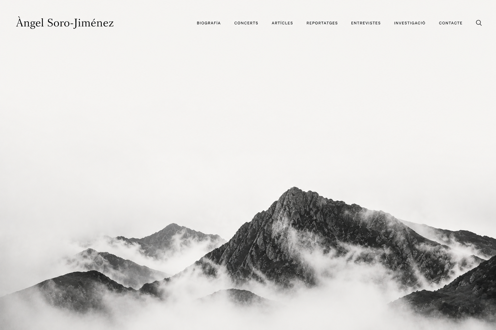

Àngel Soro-Jiménez
BIOGRAFIA
MÚSICA
ARTICLES
REPORTATGES
ENTREVISTES
INVESTIGACIÓ
CONTACTE
⌕

ÚLTIMS TREBALLS
VEURE ARXIU →
ARTICLE · 12 MAIG 2026
La justícia com a forma de pensament
→
REPORTATGE · 28 FEBRER 2026
Notes des dels marges
→
INVESTIGACIÓ · 15 GENER 2026
Materials per a una teoria crítica del dret
→